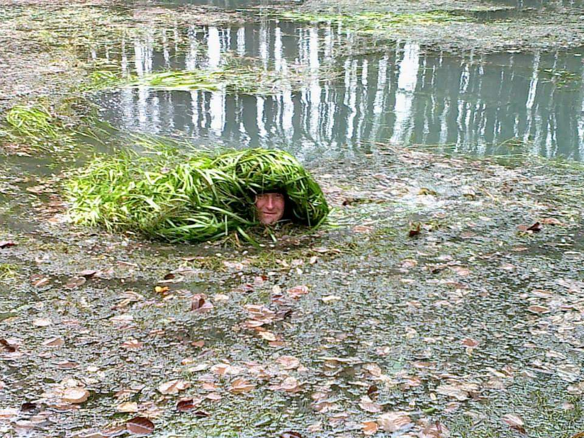
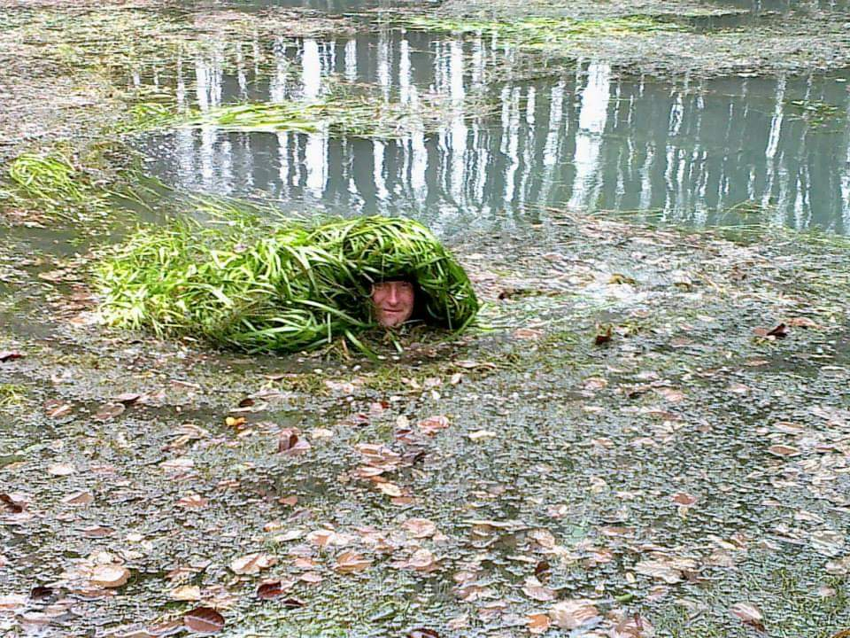

Szomorúan tudatjuk, hogy barátunk, sporttársunk, Varga Norbert a KEMRSE vezető pilótája 2021.10.29-én elhunyt.
2021.10.29-én délután Norbi barátunk futás közben rosszul lett és elhunyt. Halálával elvesztettünk egy olyan embert, aki a magyar siklóernyőzésben, a tandem repülésben mérföldkőnek számított. Elvesztettünk egy barátot, egy olyan sporttársat és vezetőt, akire mindig lehetett számítani. Elvesztettünk egy jó embert. Nyugodj békében!

 



#Tata #sikloernyozes #KEMRSE #VargaNorbert
#elhunyt